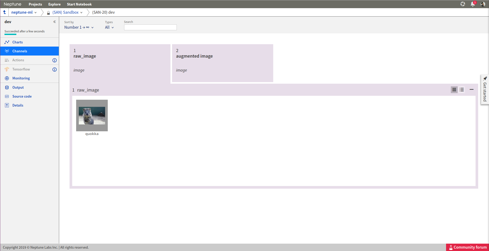
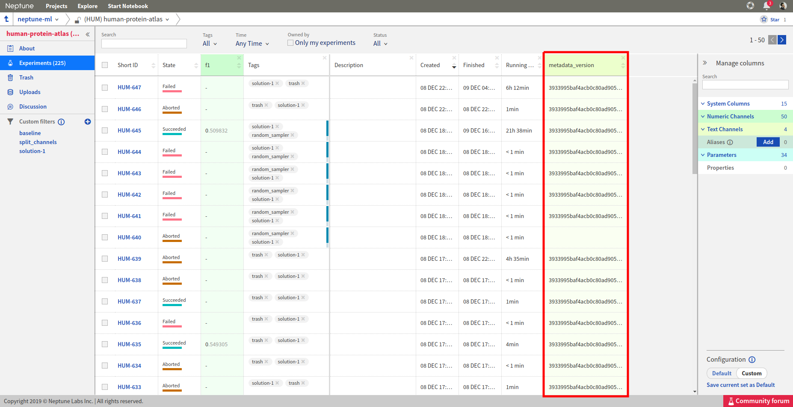
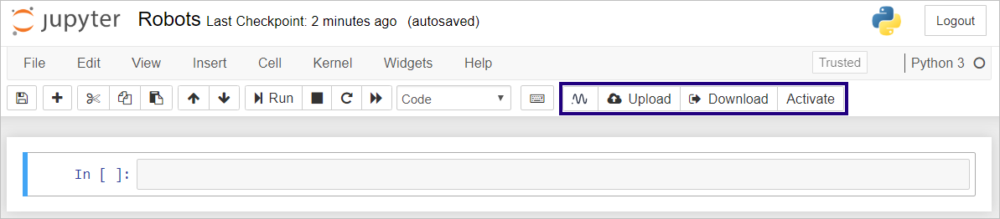

Track
Log metrics to Neptune
How do I track multiple metrics (loss, scores) in the experiment?
Solution
Step 1: Log
In order to log metrics to Neptune, you simply need to:
import neptune
neptune.init('shared/onboarding')
with neptune.create_experiment():
# 'log_loss' is User defined metric name
neptune.send_metric('log_loss', 0.753)
neptune.send_metric('AUC', 0.95)
Another option is to log key: value pair like this:
neptune.set_property('model_score', '0.871')
Note
You can create as many metrics as you wish.
Step 2: Analyze
Browse and analyse your metrics on the dashboard (example) or in the particular experiment (example experiment).
Log images to Neptune
I generate model predictions after every epoch. How can I log them as images to Neptune?
Solution
Log single image to Neptune
Create PIL image that you want to log. For example:
import imgaug as ia
from PIL import Image
img = ia.quokka()
img_pil = Image.fromarray(img)
Log it to Neptune:
import neptune
# This function assumes that NEPTUNE_API_TOKEN environment variable is defined.
neptune.init(project_qualified_name='shared/onboarding')
with neptune.create_experiment() as exp:
exp.send_image('quokka', img_pil)
As a result, quokka image is associated with the experiment
{kind=link}
Log multiple images to neptune
You can log images in a loop. For example, you can augment your image and log it to Neptune:
from imgaug import augmenters as iaa
aug_seq = iaa.Affine(scale={"x": (0.8, 1.2), "y": (0.8, 1.2)},
translate_percent={"x": (-0.2, 0.2), "y": (-0.2, 0.2)},
rotate=(-25, 25),
)
exp2 = neptune.create_experiment()
for run in range(20):
img_aug= aug_seq.augment_image(img)
img_pil_aug = Image.fromarray(img_aug)
exp2.send_image('quokka_version_{}'.format(run), img_pil_aug)
exp2.close()

Save experiment output
I can run my experiment but I am struggling to save the model weights and the csv file with the results when it completes. How can I do that in Neptune?
Solution
Save everything as you go! For example:
with neptune.create_experiment() as exp:
exp.send_artifact('/path/to/model_weights.h5')
...
exp.send_artifact('/path/to/results.csv')
Your results will be available for you to download in the Output section of your experiment.
{kind=link}
Specify experiment parameters
I saw that Neptune logs experiment parameters.

But I don’t know how to specify parameters for my experiments.
Solution
You define your parameters at experiment creation, like this:
import neptune
# This function assumes that NEPTUNE_API_TOKEN environment variable is defined.
neptune.init('username/my_project')
# check params argument
with neptune.create_experiment(name='first-pytorch-ever',
params={'dropout': 0.3,
'lr': 0.01,
'nr_epochs': 10}):
# your training script
Where params is standard Python dict.
Version datasets
When working on a project, it is not unusual that I change the datasets on which I train my models. How can I keep track of that in Neptune?
Solution
Under many circumstances it is possible to calculate a hash of your dataset. Even if you are working with large image datasets, you have some sort of a smaller metadata file, that points to image paths. If this is the case you should:
Step 1
Create hashing function. For example:
import hashlib
def md5(fname):
hash_md5 = hashlib.md5()
with open(fname, "rb") as f:
for chunk in iter(lambda: f.read(4096), b""):
hash_md5.update(chunk)
return hash_md5.hexdigest()
Step 2
Calculate the hash of your training data and send it to Neptune as text:
TRAIN_FILEPATH = 'PATH/TO/TRAIN/DATA'
train_hash = md5(TRAIN_FILEPATH)
neptune.send_text('train_data_version', train_hash)
...
Step 3
Add data version column to your project dashboard:
{kind=link}
Note
If your dataset is too large for fast hashing you could think about rearranging your data to have a light-weight metadata file.
Keep my code private
My code is proprietary, so I do not want to send any sources to Neptune, while training locally. How can I do that?
Solution
All you need to do it to pass empty list [] to the upload_source_files parameter, like this:
import neptune
# This function assumes that NEPTUNE_API_TOKEN environment variable is defined.
neptune.init(project_qualified_name='shared/onboarding')
with neptune.create_experiment(upload_source_files=[]) as exp:
...
As a result you will not send sources to Neptune, so they will not be available in the Source Code tab in the Web app.
Upload notebook checkpoint
I want to add a Notebook checkpoint to my project. How do I do that?
Solution
Go to your Jupyter UI, where you will see several Neptune buttons:
{kind=link}
Neptune: For modifying configuration.
Upload: For creating a new checkpoint in Neptune.
Download: For downloading a specific checkpoint from Neptune.
Activate: Associates experiments you will be running with this Notebook.
Click Upload whenever you want to create new checkpoint in Neptune. As confirmation, Neptune displays a notification with a link. If the Activate button was clicked, checkpoints will be created automatically after every experiment creation.